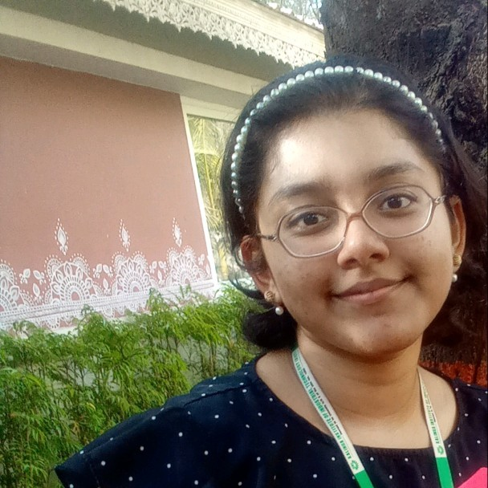

Data Scientist. Bookworm. Daydreamer. Lifelong Learner
I'm Debosmita, an undergrad majoring in Computer Science and a budding data scientist. I am passionate about honing and using my analytical skills to uncover actionable insights from data. From healthcare data to sports statistics, I uncover the stories behind the data wherever my curiosity takes me. To know more about what I've done and what I can do, check out my details or download my cv below!
I fell in love with data science and chose it for my career because I am fascinated by the fact that a wealth of valuable information lies latent in data, hiding in plain sight, capable of anything from revolutionizing industries to saving lives, and I find it incredibly motivating to do my bit in furthering this great treasure hunt.
When I'm not working on a project or binge-watching a course, you'll probably find me curled up with a book. I'm an avid bookworm, and my interests range from cozy mysteries to philosophy. I also love to swim (whenever I get the chance!), listen to obscure movie soundtracks (might I recommend Thomas Newman's "Oscar and Lucinda"?) and explore new things (just started learning French!). My aim is to be a lifelong learner, and I try to live up to that every day.
| Name | Institution | Year | CGPA/Percentage |
|---|---|---|---|
| B.Tech Computer Science and Engineering | KIIT Deemed to be University | 2021 - Present | 9.16 |
| Higher Secondary (12th Boards) ISC | Adamas International School | 2021 | 98.25 |
| Secondary (10th Boards) ICSE | Adamas International School | 2019 | 98.8 |